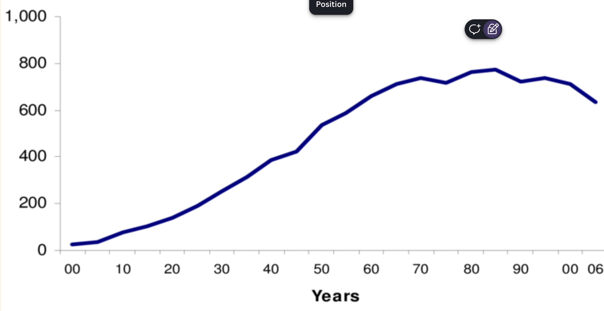
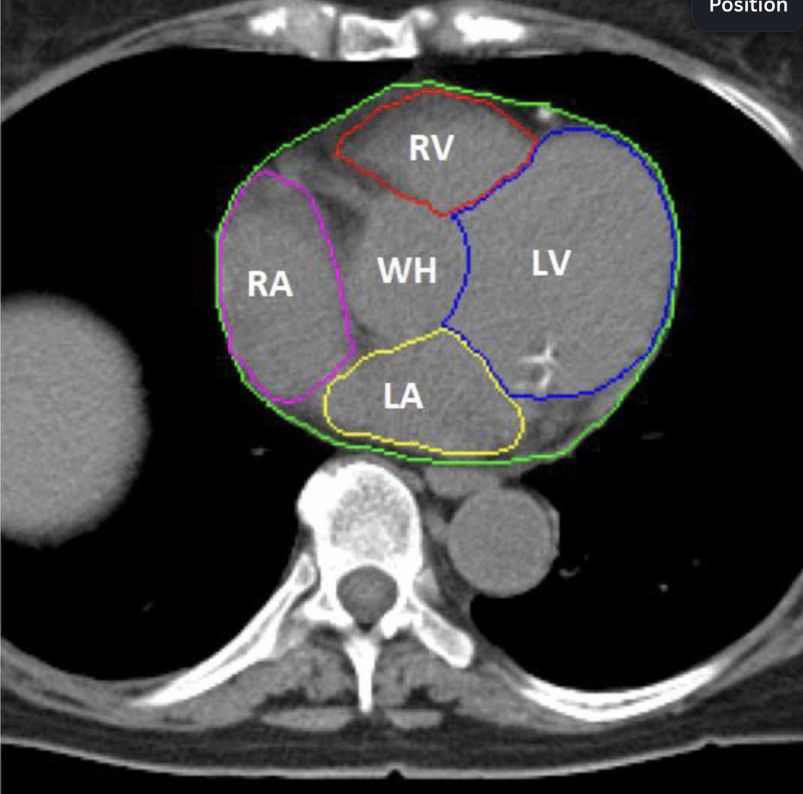
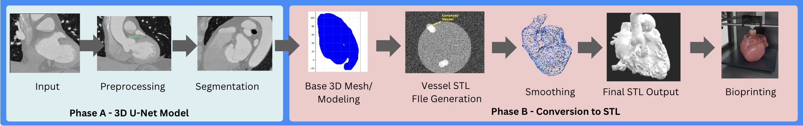
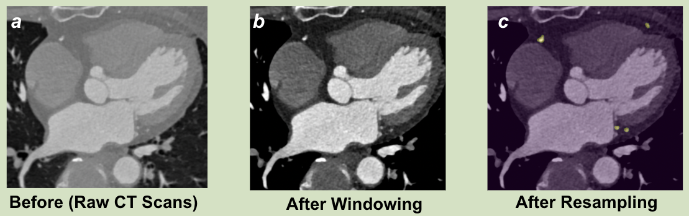
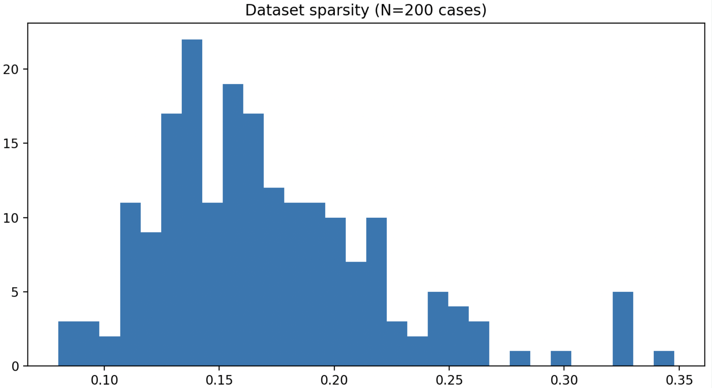
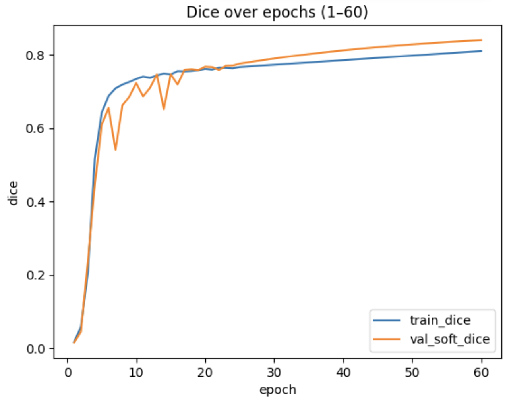
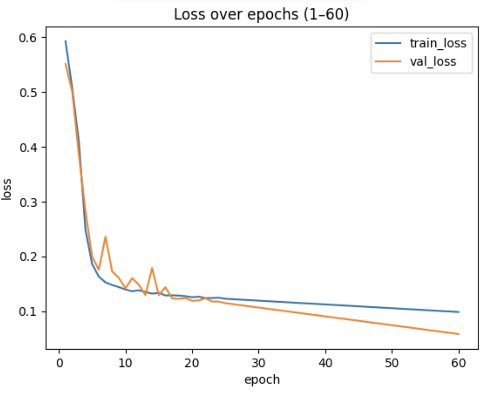
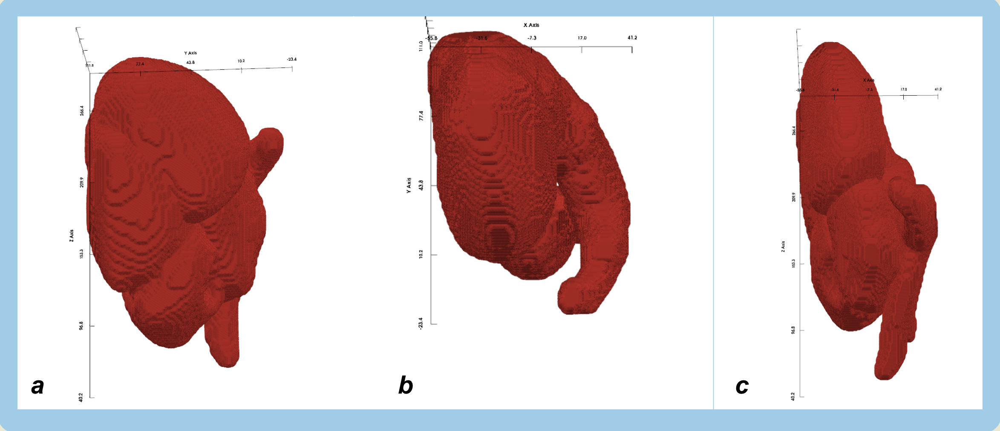
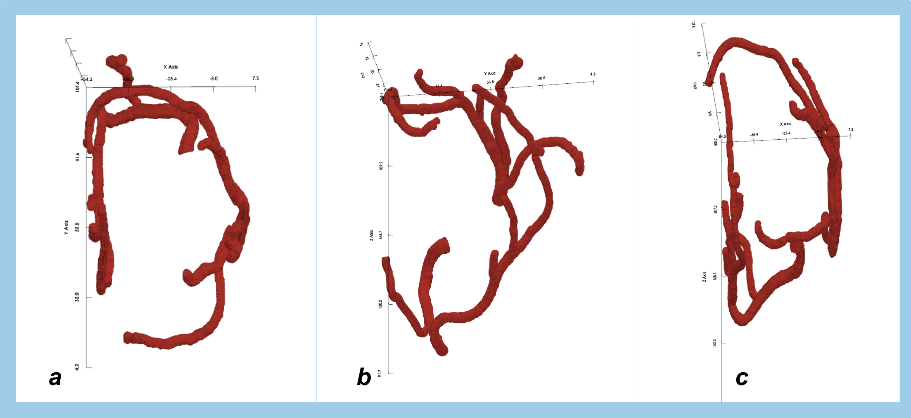
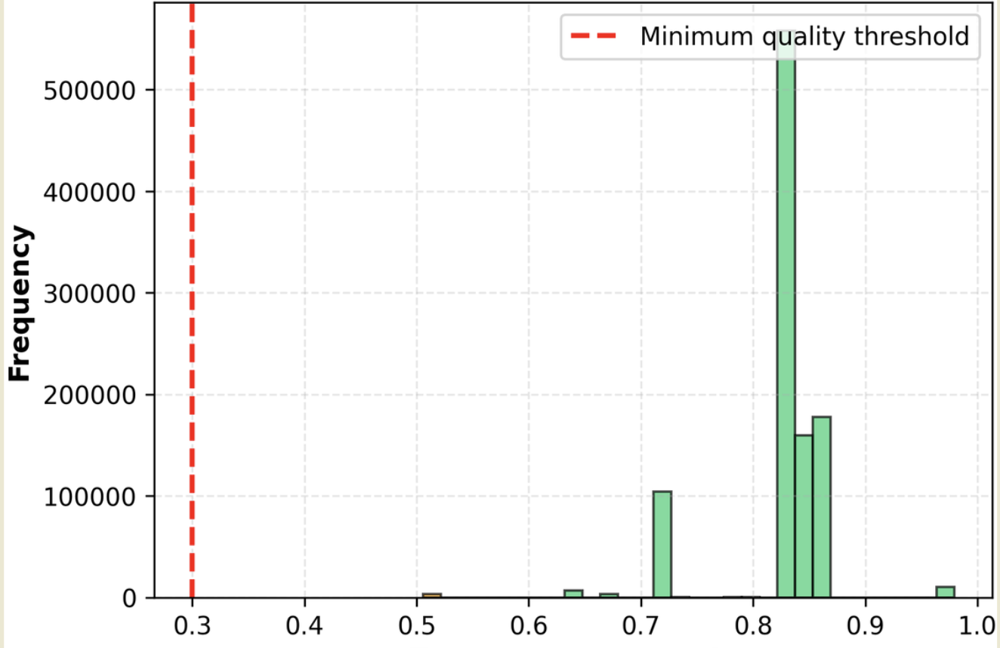

3D U-Net convolutional neural network for patient-specific vascular modeling
Cardiovascular disease causes 17.9 million deaths per year worldwide. Current challenges include:

Rising cardiovascular disease deaths over time
Current manual segmentation process performed by trained radiologistsOur automated pipeline replaces manual annotation with deep learning:

Two-phase workflow: Phase A (3D U-Net segmentation) and Phase B (STL conversion)Raw CT scans require windowing and resampling to standardize input:

Raw CT scans vs. windowed and resampled data
Visualizing the 0.175% voxel sparsity challenge in cardiac CT dataSegmentation overlap accuracy
Pixel-wise classification
Hard example focus

Training and validation loss convergence
Dice coefficient showing segmentation accuracyZero holes, manifold topology, 50-plane sliceability validation
Wall thickness ≥3mm enforced for PLGA bioprinting requirements
From 8-12 hours manual work to under 1 hour automated processing

Final watertight 3D heart model ready for bioprinting
Isolated vascular network showing detailed coronary structure
Edge stability distribution validating bioprinting feasibility